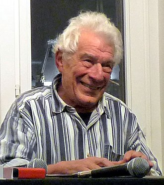

Berger says that no matter how much background research one does on the artist of a painting, there is no way to exactly capture what the artist was trying to portray. The phrase "a picture is a thousand words" isn't enough in the eyes of John Bergen and instead is "a picture cannot be put into words". Berger also mentions how different the experience of viewing art is now compared to the past. In the past, people had to physically go to exhibits and museums to appreciate art's beauty but now, anyone can use technology to view art from the comfort of their home, making the experience less special and significant.
